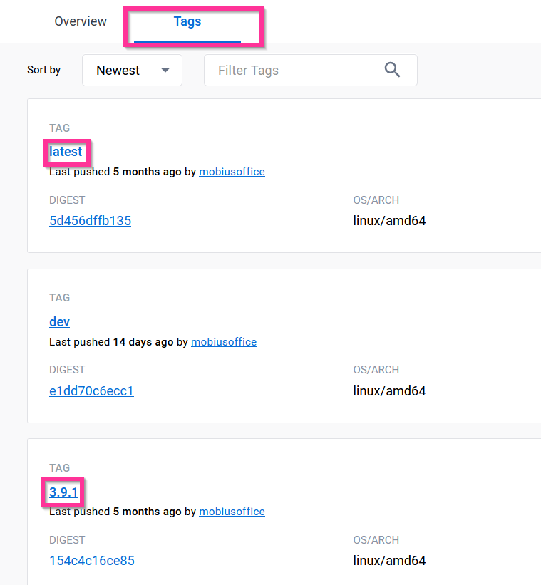
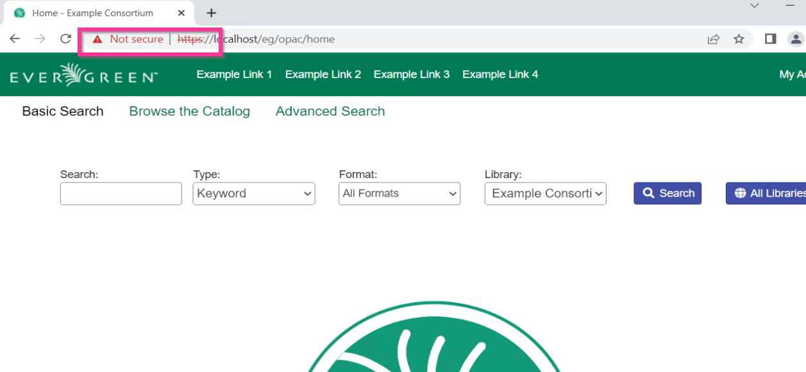

Slides available at:
slides.mobiusconsortium.org/blake/quick_docker_server
Created by Blake Graham-Henderson / blake@mobiusconsortium.org
Press ESC to browse slides

docker run -it -p 80:80 -p 443:443 -p 210:210 -p 6001:6001 \
-p 32:22 -p 5433:5432 -h app.evergreen.com \
mobiusoffice/evergreen-ils:3.9.1
Takes about 5 minutes
Takes about 5 minutes

Slides available at:
slides.mobiusconsortium.org/blake/quick_docker_server